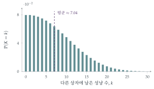

STEP II 1992, 문제 16
계속 읽기 전에 문제를 먼저 읽어 보자. 문제는 STEP Support Programme의 문제 데이터베이스에 있다: step.maths.org/questions/92-s2-q16
도입
전해지는 이야기에 따르면 수학자 바나흐(Stefan Banach)는 담배를 몹시 많이 피웠는데, 양쪽 주머니에 성냥갑을 하나씩 넣고 다녔다. 성냥이 필요할 때마다 그는 주머니 하나를 무작위로 골랐다. 어느 날 그는 성냥갑 하나가 비어 있음을 알게 되었다. 다른 성냥갑에는 성냥이 몇 개 남아 있었을까? 이것이 바로 슈타인하우스(Hugo Steinhaus)가 바나흐를 기리며 고안한 바나흐의 성냥갑 문제이며, 이 문제는 성냥 대신 사탕이 등장하는 택시 운전사 버전이다.
미묘한 점은 “발견한다”라는 말에 있다. 운전사는 봉지에서 마지막 사탕을 꺼낼 때 봉지가 비었다는 것을 알아채지 못하고, 다음에 그 봉지에 손을 뻗을 때 비로소 알게 된다. 따라서 문제의 사건은 다음과 같다. 토피 봉지에 손을 뻗었는데, \(n\)개의 토피가 이미 모두 없어진 상태이다. 이런 일이 \(N\)번째 손을 뻗을 때 일어나는 경우의 수를 세는 것은 이항분포(binomial distribution)의 깔끔한 연습 문제이며, 바나흐 문제의 답에는 놀라운 특징이 있다. 다른 상자에 남은 성냥의 수로 가장 가능성이 높은 값은 \(0\)이다(\(1\)과 공동 1위이다).
시작하기 전에
운전사가 \(N\)번째로 손을 뻗을 때 토피가 다 떨어졌음을 발견하려면, \(N\)번째에는 어느 봉지에 손을 뻗어야 하는가? 그 이전의 \(N - 1\)번에는 무엇이 들어 있어야 하는가?
\(N\)번째에는 토피 봉지에 손을 뻗어야 하고, 그 이전의 \(N - 1\)번에서는 정확히 \(n\)개의 토피(전부)와 \(N - 1 - n\)개의 박하사탕을 꺼냈어야 한다. 또한 그보다 먼저 박하사탕 봉지가 빈 것을 발견하지 않았어야 한다.
차근차근 풀기
단계 1 토피가 다 떨어졌음을 발견하기
처음 \(N - 1\)번의 시행은 어떤 순서로 일어날 수 있는가? \(N - 1 - n\)에 대한 어떤 조건이 있어야 박하사탕 봉지가 빈 것을 한 번도 발견하지 않게 되는가?
토피를 꺼낸 \(n\)번은 처음 \(N - 1\)번 가운데 어느 \(n\)번이어도 된다. 박하사탕을 최대 \(m\)개 꺼냈다면, 즉 \(N - 1 - n \leq m\)이면, 박하사탕이 떨어진 뒤에 박하사탕 봉지에 손을 뻗은 적은 없다. 따라서 \(n + 1 \leq N \leq n + m + 1\)일 때 \[\mathrm{P}(T_N) = \binom{N - 1}{n}p^{n+1}q^{N-1-n},\] 이다. 여기서 \(T_N\)은 “\(N\)번째로 손을 뻗을 때 토피가 다 떨어졌음을 발견한다”는 사건이다(인수 \(p^{n+1}\)에는 \(N\)번째 시행 자체가 포함되어 있다).
단계 2 박하사탕이 다 떨어졌음을 발견하기
역할을 바꾸어 같은 논증을 하면, \(m + 1 \leq N \leq n + m + 1\)일 때 \[\mathrm{P}(M_N) = \binom{N - 1}{m}q^{m+1}p^{N-1-m}.\]
단계 3 조건부 확률
\(N\)번째 시행에서 발견이 일어났다는 사실이 주어졌다. 그것이 토피였을 확률은 얼마인가?
사건 \(T_N\)과 \(M_N\)은 배반 사건(exclusive events)이므로 \[\mathrm{P}(\text{토피} \mid \text{발견 시점 } N) = \frac{\binom{N-1}{n}p^{n+1}q^{N-1-n}}{\binom{N-1}{n}p^{n+1}q^{N-1-n} + \binom{N-1}{m}q^{m+1}p^{N-1-m}},\] 이다. 단, 이항계수(binomial coefficient)는 위의 범위 밖에서는 \(0\)으로 본다. (\(N \leq m\)이면 토피만 떨어졌을 수 있으므로 확률은 \(1\)이다. 마찬가지로 \(N \leq n\)이지만 \(N > m\)이면 확률은 \(0\)이다.)■
\(n = m\)이고 \(p = q = \frac12\)일 때 이 공식을 확인해 보아라. 대칭성에 의해 가능한 모든 \(N\)에 대해 답은 \(\frac12\)이어야 한다. 실제로 그러한가?
돌아보기
사건을 정확히 읽는다. “발견한다”는 마지막 사탕을 꺼내는 것이 아니라 빈 봉지에 손을 뻗는 것을 뜻했다.
마지막 단계를 고정하고 나머지를 센다. \(N\)번째 시행을 고정했고, 처음 \(N - 1\)번은 어떤 순서여도 되므로 이항계수가 나왔다.
경계를 확인한다. 제약 조건 \(N - 1 - n \leq m\)과 \(N - 1 - m \leq n\)이 불가능한 진행 과정을 걸러 냈다.
숨은 수학
바나흐의 성냥갑
바나흐의 버전에서는 각 성냥갑에 처음에 성냥이 \(n\)개씩 들어 있고, 두 주머니가 선택될 가능성은 같다. 그가 처음으로 빈 성냥갑을 발견했을 때 다른 성냥갑에 남은 성냥의 수를 \(K\)라 하자. \(K = k\)이려면, 빈 성냥갑으로 한 번 더 손을 뻗기 전에 빈 성냥갑에서 \(n\)개, 다른 성냥갑에서 \(n - k\)개를 어떤 순서로든 꺼냈어야 한다. 또한 어느 성냥갑이든 빈 쪽이 될 수 있다. 따라서 \[\mathrm{P}(K = k) = 2\binom{2n - k}{n}\Bigl(\frac12\Bigr)^{2n - k + 1} = \binom{2n - k}{n}\Bigl(\frac12\Bigr)^{2n - k}.\] 이 확률들은 \(k\)가 커질수록 감소하는데, 다만 \(\mathrm{P}(K = 0) = \mathrm{P}(K = 1)\)이다(그림 12.17.1). 남은 성냥 수의 기댓값(expected value)은 약 \(2\sqrt{n/\pi} - 1\)이다. 각 성냥갑에 성냥이 \(50\)개씩 있으면 약 \(7\)이다. 여기서 \(\sqrt n\)은 \(2n\)번의 무작위 선택 뒤 두 성냥갑 사이에 생기는 불균형의 전형적인 크기로, 생일 문제(9.9 절)와 무작위 행보(random walk)에서 나오는 것과 같은 제곱근 법칙이다.

음이항분포
각각 성공 확률이 \(p\)인 독립 시행에서 \(r\)번째 성공을 얻을 때까지 필요한 시행 횟수는 음이항분포(negative binomial distribution)를 따른다. 즉 \(\mathrm{P}(N = k) = \binom{k - 1}{r - 1}p^rq^{k-r}\)이다. 택시 운전사 문제는 두 음이항 과정(토피와 박하사탕) 사이의 경주이며, 각 과정은 사탕 수보다 한 번 더 많은 “성공”을 필요로 한다. 음이항분포는 보험(청구 건수), 생태학(무리 지어 분포하는 동물의 개체 수), 유전학 등에 나타나며, 흔히 푸아송 분포(Poisson distribution)보다 유연한 대안으로 쓰인다.
함수해석학(functional analysis)의 창시자 가운데 한 사람인 바나흐는 르부프(Lwów, 지금의 리비우(Lviv))의 스코틀랜드 카페에서 많은 수학 연구를 했다. 그곳에서 그와 동료들은 웨이터가 보관하던 공책인 스코틀랜드 책(Scottish Book)에 문제를 적어 두었고, 상품은 맥주 한 잔부터 살아 있는 거위 한 마리까지 다양했다. 바나흐의 스승인 슈타인하우스는 바나흐의 흡연을 기리는 연설을 위해 성냥갑 문제를 고안했다. 이 문제를 처음으로 출판물에서 분석한 사람은 펠러(William Feller)로, 1950년에 나온 그의 유명한 확률론 교과서에서였다.
사고 기술
어떤 과정이 특정한 시점에 특정한 방식으로 끝날 확률을 구하려면, 마지막 단계에서 일어나는 일을 고정하고 그곳에 이르는 진행 과정의 수를 센다.
대학에서 이것은 음이항분포, 무작위 행보의 첫 도달 시간(first-passage time), 그리고 9.10 절의 반사 원리(reflection principle)의 기초가 된다.
더 도전하기
작은 경우. \(n = m = 1\)이고 \(p = \frac12\)일 때 가능한 순서를 모두 나열하고 \(N\)의 분포를 구하여라.
바나흐의 공식. \(n = 1\)과 \(n = 2\)일 때 \(\sum_{k=0}^{n}\binom{2n - k}{n}2^{-(2n-k)} = 1\)임을 확인하여라.
같은 꼭대기. 바나흐 문제에서 모든 \(n\)에 대해 \(\mathrm{P}(K = 0) = \mathrm{P}(K = 1)\)임을 보여라.
어느 쪽이 먼저 떨어지는가? 택시 운전사 문제에서 \(n = m = 2\)이고 \(p = \frac23\)일 때, (언제든) 처음으로 빈 것이 발견되는 봉지가 토피 봉지일 확률을 구하여라.
더 읽을거리
William Feller, An Introduction to Probability Theory and Its Applications, Vol. 1 (Wiley), 제VI장. 바나흐 문제를 세상에 처음 소개한 책이다(확률론 입문과 그 응용).
R. Daniel Mauldin (ed.), The Scottish Book (Birkhäuser). 스코틀랜드 카페의 문제들을 해설과 함께 실었다.
Geoffrey Grimmett & Dominic Welsh, Probability: An Introduction (Oxford University Press). 음이항분포를 다룬다(확률론 입문).